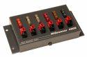
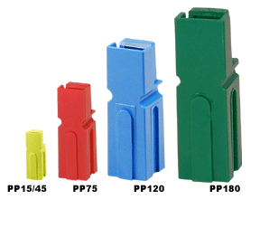
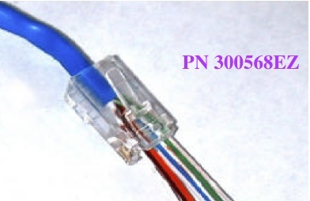
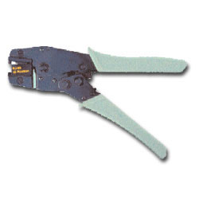

Last Modified: November 4, 2011
Contents: Basics; Modular Jacks & Plugs; Remote Cables; Beads; Power Cables; If You Just Have To;
Being frugal is part of the game; cutting corners reeks of cheap!
Power, microphone, accessory, and/or remote cables are an integral part of every mobile installation. Most manufacturers include the first two, and sometimes the third. Remote cables are usually extra-cost items included in a remote kit along with the requisite mobile mounting brackets. When they're not included (pre-owned purchase, etc.), a lot of enterprising amateurs attempt to make their own. Nothing wrong with that, as long as you use the correct connectors and cabling.
West Mountain Radio sells the necessary equipment to make your own power cables. If you have the necessary hardware, including the proper crimping tools, and fuse holders, it isn't a difficult task. However, most new amateur transceivers use a bifurcated power cable, wherein the wire is split so that more than one pin carries the current. Improperly done, the usual result is a burned power connector, or worse a fire! If you need to extend the length of the power cable, then read the Power Cable section below.
When the cable in question uses proprietary connectors (the remote control cable for an Icom 706 or 7000 are good examples), some folks try to splice them. About all this does is ruin a good cable, and all but guarantees RFI ingress problems.
In some cases, folks substitute cabling never meant for the purpose; CAT5 cabling for example. If this is your take, and the pinout isn't correct, you can cause damage to the radio. Here too, you run the risk of RFI ingress, the use of shielded CAT5 notwithstanding.
They're not will covered here, but the Port Pinout article contains most of the popular HF mobile transceiver port pinouts. Just make sure you read the caveat section.
 A lot of the newer transceivers use modular jacks and plugs for microphone and/or remote cables. While they appear to be RJ45 telephone type jacks and plugs, they aren't! In fact, modular jacks and plugs come in about 50 different configurations. Some are designed for round cables, some for oval cable, some for flat cables, and there are different types for solid and stranded wire. There are keyed and unkeyed ones; ones with external cord grips; and ones for heavy-duty use. Selecting the correct one isn't as easy as it appears.
A lot of the newer transceivers use modular jacks and plugs for microphone and/or remote cables. While they appear to be RJ45 telephone type jacks and plugs, they aren't! In fact, modular jacks and plugs come in about 50 different configurations. Some are designed for round cables, some for oval cable, some for flat cables, and there are different types for solid and stranded wire. There are keyed and unkeyed ones; ones with external cord grips; and ones for heavy-duty use. Selecting the correct one isn't as easy as it appears.
Adding a little insult, MFJ, and a couple of other manufacturers, use RJ45 telephone-style jacks, plugs, and even silver satin, 8 conductor telephone wire as interconnect cabling. The problem is, they aren't wired like telephone cables, and arbitrarily substituting a telephone cable will garner you an expensive repair!
The tools needed to crimp the various types are also slightly different. One designed for round cable will not crimp a flat cable correctly, and one for flat cable can actually cut through a round cable. There are some 8 different die sets to accommodate them all.
 There are other considerations too. Referring to the Icom microphone jack wiring diagram (roughly 4 times actual size), you can see that the pins are very close together (approximately 1/32"). If you're fat fingered, you may not be able to properly position and hold the wires in the corresponding plug during crimping. The first time I tried it, I went through four plugs before I got it right. And note there are separate ground connections for the microphone and the PTT.
There are other considerations too. Referring to the Icom microphone jack wiring diagram (roughly 4 times actual size), you can see that the pins are very close together (approximately 1/32"). If you're fat fingered, you may not be able to properly position and hold the wires in the corresponding plug during crimping. The first time I tried it, I went through four plugs before I got it right. And note there are separate ground connections for the microphone and the PTT.
Pin 3 is the audio output on an Icom IC-706MkIIg. On the IC-7000, this pin is used as a microphone "sense" pin which tells the radio an HM-151 (stock mic) is attached. If you plug in a Heil headset designed for the IC-706, the radio thinks it is an HM-151. What's more, the requisite audio input levels are very different, so the transmitted audio will be distorted. Incidentally, Heil has a headset designed especially for the IC-7000. Its higher output does require a lower gain setting however.
Pin 6, the microphone input, has an 8V DC regulated supply fed to it (this is true of Yaesu and Kenwood as well). Although there is an internal resistor in series with this lead, shorting it to ground can cause both the series resistor and the 8V regulator to over heat causing one or both to eventually fail. Further, shorting pin 1 to ground will cause the 8V regulator to instantly fail! Either way, doing so is an expensive fix as they are both surface-mounted devices, and require special tools to replace.
Pin 2 is a multi purpose input. Shorted to ground during receive, it causes the frequency to go up. Placing a 470 ohm resistor in series to ground causes the frequency to go down. In CW mode, a 3.9k ohm resistor to ground is the dit side of the paddle (or straight key connection), and a 2.2k ohm resistor is the dah side of the paddle (information about the latter can be found on page 34 of the owners manual). There is also an audio out and a squelch switch. All of these possible uses for the jack makes it an inviting target for the uninformed. Incidentally, the maximum current for the 8V line and the sink for the squelch switch is 10 mils! The former is not intended to power ancillary equipment like TNCs.
I encourage everyone to use commercially available interconnect cables when ever possible. For example, Icom makes an adapter to convert the microphone jack from modular to an eight pin standard microphone jack for use with their SM8 and other desk microphones.
Icom is not alone in its use of modular jacks and plugs. Yaesu and Kenwood also use them especially on their mobile transceivers, and similar caveats are in order.
 There is a very important caveat with respect to the IC-7000 (and older IC-706). Make sure the grounding screw for the remote cable is installed. It is very small (2 mm x 6 mm), and is depicted on page 16, center drawing, Figure 2, in the Owners Manual (reproduced at left). Leave it out, and you're in for major RFI problems. The 706 cable is slightly different (see page 10), but the same caveat applies.
There is a very important caveat with respect to the IC-7000 (and older IC-706). Make sure the grounding screw for the remote cable is installed. It is very small (2 mm x 6 mm), and is depicted on page 16, center drawing, Figure 2, in the Owners Manual (reproduced at left). Leave it out, and you're in for major RFI problems. The 706 cable is slightly different (see page 10), but the same caveat applies.
DC cabling doesn't need to be shielded, because its impedance is very low. However, most other amateur radio cabling is shielded, and for very obvious reasons. Unfortunately, some enterprising amateurs think it is okay to use Ethernet CAT5 cable for their interconnections. It isn't. Yes, you can buy shielded CAT5 cable, but the vast majority of it is solid conductor, and should never be used in a mobile environment.
There is another little problem with CAT5, which very few think about, and that is its construction. It isn't 8 separate strands, it is actually 4 pair, with each pair separately twisted together. Depending on the use, and how it is wired (ready-made CAT5 cable assemblies come in several different wiring configurations), crosstalk between the conductors is almost a given.
Just in case you missed the point, using a ready-made CAT5 cable in your mobile just might work. Then again, it might not, and you'll be in for an expensive fix!
The similar caution should be used with MFJ's interconnect cables, like those supplied with their ALS-500 amplifier remote kit. They are indeed 8 conductor, silver satin telephone cable, but the connectors are installed differently; they're straight, not crossed over. This is one of the very few cases where you can shorten them, and install a new RJ45 plug with a standard telephone crimp tool. That is, as long as your observe the polarity!
Ferrite split beads are marvelous little wonders, but all too often they're misused. Once such misuse is applying them to power cables. You even see commercially made ones. The truth is, beading power cables won't cure any RFI, AFI, or EMI malady regardless of the advertising hype to the contrary. If you read the article, you'll know why.
They are of use on extension cables (for RFI ingress and egress issues), coax (for common mode current reduction), and as motor lead chokes on remotely tuned HF mobile antennas. Here's something to think about. The amount of impedance split beads add is to the square of the number of turns. For example, 6 turns through one bead is the same as one turn through 36 beads! If you're using them for common mode current reduction, it pays to keep this fact in mind.
Here's some additional food for thought. The best mix available to amateurs for use as chokes (the primary use in mobile installations) is mix 31. Depending on the ID size of the bead, the reactance per turn is approximately 70 ohms at 10 MHz. It should be evident that using them for AFI reduction (alternator whine for example) is all but fruitless.
If you haven't done so already, you should read the Wiring article. Please pay particular attention to the caveats section of the article, especially if you own a late model (≧2012) Ford vehicle.
Using RG8, or any other coax, as a power feed is an accident waiting to happen. The center conductor of RG8 may be from size 10, to as small as size 13. The maximum current carrying capacity is just 14 amps, or about half that required for most 100 watt transceivers. The premise seems to be, that RG8 will miraculously cure alternator whine, or prevent RFI intrusion. It won't! Another, just as inane practice, is twisting the power cable with an electric drill, apparently for the same reason. Just for the record, most alternator whine is caused by a ground loop, typically as a result of using a mag mounted antenna. If you have to resort to a brute-force filter to quell alternator whine, you'd best look for the source, and not the affect. There is more about this, and other poor practices, in the Wiring article.

For a variety of reasons, voltage drop should be held to less than .5 volts under full load. If you've read the Wiring article, you'd know how to select the right sized wire, and keep well within the guideline. The problem is, the connectors, like those on the rear aprons of most new miniature transceivers, won't support wire sizes required for long runs (> 12 feet). In fact, if you look at the factory supplied cables, you'll see the cable is bifurcated (split) across two separate pins. If you're adept at doing this sort of thing, fine, but there is a better solution.

As mentioned above, applying ferrite split beads to DC power cables is a waste of resources, for any noise abatement problem, no matter how many cores you use. Remember, one of the conductors is at ground potential, so common mode will not occur, unless the cable in question has excessive loss. Further, ferrites are frequency dependent, and are nearly worthless at frequencies below 1 MHz. Thus, their ability to quell alternator whine is nil!
 I point this out in the Wiring Protection article, but it bares repeating here. Anderson Power Pole® connectors come is a variety of colors. In fact, Anderson recommends specific colors for specific voltages. Almost universally, amateur use is restricted to nominal 13.8 volts DC, but we can still use the colors to our advantage. Seven of the colors match the ATO fuse colors supplied with the aforementioned RigRunner®. Thus using matching colors, helps assure that you plug each ancillary device into their respective fuse size. Call it a safety factor.
I point this out in the Wiring Protection article, but it bares repeating here. Anderson Power Pole® connectors come is a variety of colors. In fact, Anderson recommends specific colors for specific voltages. Almost universally, amateur use is restricted to nominal 13.8 volts DC, but we can still use the colors to our advantage. Seven of the colors match the ATO fuse colors supplied with the aforementioned RigRunner®. Thus using matching colors, helps assure that you plug each ancillary device into their respective fuse size. Call it a safety factor.
I don't suggest making up your own modular extension cables in the first place as most of them are of proprietary material and configuration. Using pre-made telephone cables and splices isn't the answer either. Remember, most telephone cables flop over. That is to say, pin 1 on one end is pin 8 on the other. Ethernet cables come is straight and crossover configurations, and although their splices look like telephone splices, they're not wired the same. This is one area of amateur radio where you shouldn't scrimp, as the potential damage costs far exceeds the procurement costs of most cables. If you just can't help yourself, and you just have to try, here is a suggestion or two.

The best type modular plugs to use, are those made by Bomar, under the trade name EZ-Plug®. These have drilled through holes in the end of the plug allowing the wire to protrude. This helps in assuring the plugs are correctly wired before crimping. The Mouser part number, 678-300568EZ, may be used with stranded, round cable. If you use these specific plugs, and do not own the correct EZ crimping tool, you can use an X-acto knife to trim off the extra wire to avoid shorts.

I caution everyone not to use the cheap Radio Shack crimper. It is designed for flat, stranded telephone cable, yet they'll tell you it is okay for Ethernet cable. It isn't! And it will not properly crimp any of the connectors when round wire is used. If you squeeze hard enough (as suggested in the instruction sheet) you run the risk of separating the insulation which can cause a short (to say nothing about breaking the plastic handles). It just isn't worth taking the chance.
Remember to check your connections for continuity, and shorts before attaching the cables to your hardware. A pair of pre-wired jacks are a good solution for checking continuity. Also, make sure the wire is properly restrained by the strain relief. Whatever you do, just take your time, and be safe rather than sorry!
{kind=link}
{kind=link}
{kind=link}
{kind=link}